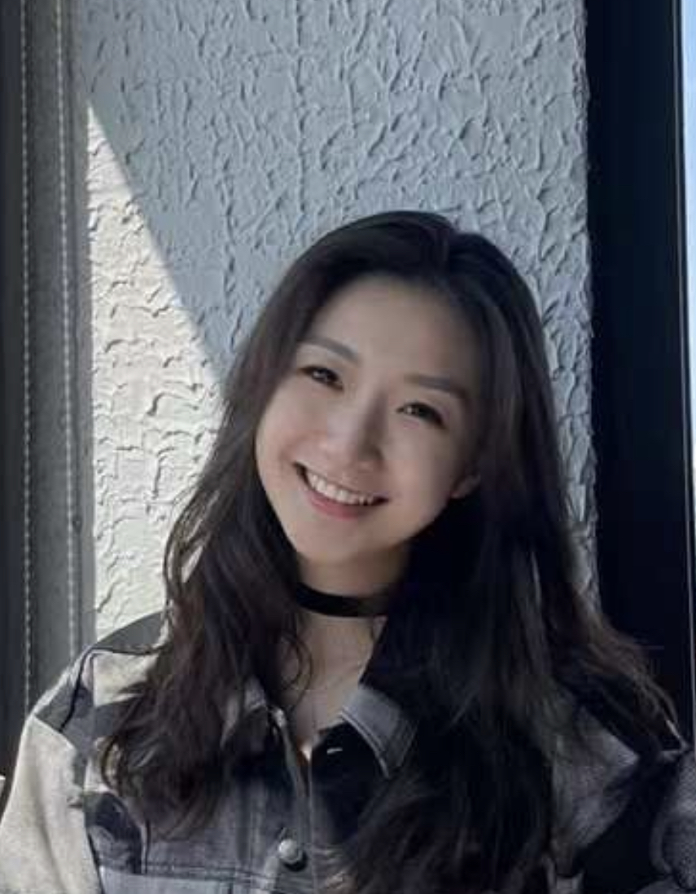

Hey, I’m YUHAN!
Thank you for visiting my site :)
I’m a visually-guided and user-oriented designer. I usually work on digital art, graphic designs, and UIUX.
Currently, I’m an undergrad junior at Brown University studying Behavioral Decision Sciences with a specialization in product design and the internet marketplace.
I have a joint interest in entrepreneurship and design. I founded a non-profit organization, ARC, that connects student graphic designers to small businesses/charities that need design. I co-founded Dream!n, a non-coding game engine and a platform to socialize and play with the games users generated. As a team, we also won 2nd place in 2022 Brown Venture Prize.
I also interned at many companies and mainly worked on branding, product management and operations. See my LinkedIn for more info!
When I’m not at work, you can find me:
- at a squash court.
- taking film and digital photos.
- exploring good restaurants.
- doing oil painting.
- playing games on PS5/NS/Steam with friends.
- bartending
- skydiving (planning my next one soon!)
© 2023 Yuhan (Eileen) Zhang All Rights Reserved